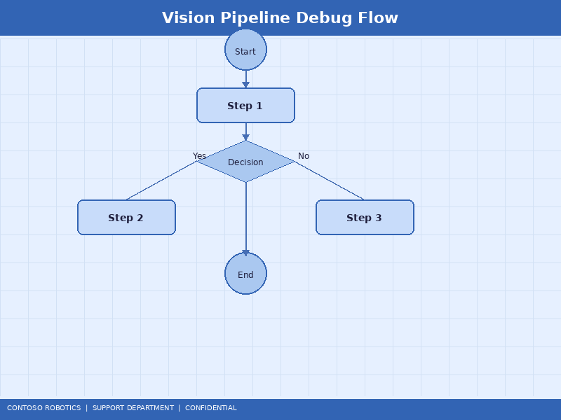
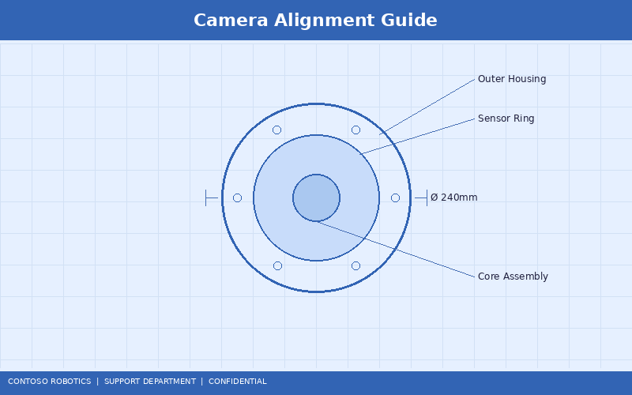

CoBot Vision System Troubleshooting
This document provides troubleshooting procedures for the CoBot Vision Module VM-200 when integrated with the CoBot Pro 500 or CoBot Pro 700. It covers camera feed issues, calibration drift, object detection failures, lighting problems, and network latency diagnostics. For the underlying vision algorithm architecture, refer to the Perception Pipeline Design in the Engineering documentation.
1. Diagnostic Overview
The CoBot Vision Runtime v2.1 reports issues through three channels:
- Teach pendant alerts: Real-time pop-ups for critical vision faults (V-001 through V-020)
- CoBot Studio IDE Vision Log: Detailed timestamped log under Vision → Diagnostics → Log Viewer
- System journal: Low-level kernel and driver messages accessible via SSH (
journalctl -u cobot-vision)

2. Camera Feed Issues
No Image Displayed
- Check the VM-200 power LED. If off or red, verify the M12 hybrid cable connection and 24 V power supply.
- Run Vision → Diagnostics → Connectivity Test. If the ping fails, check that the VISION port IP is on the 192.168.2.x subnet (default: 192.168.2.10 for the VM-200, 192.168.2.1 for the control cabinet).
- Verify the GigE Vision driver is running: on the teach pendant, navigate to System → Services and confirm
cobot-vision-gige shows "Active."
- If using a network switch between the VM-200 and control cabinet, ensure jumbo frames (MTU 9000) are enabled on the switch port.
Image Is Dark or Overexposed
- Check exposure settings in Vision → Pipeline Editor → Image Acquisition. Switch between auto and manual exposure to isolate the issue.
- Verify the LED ring light intensity. A value of 0% produces a dark image; ambient light alone may be insufficient.
- Inspect the camera lens for contamination (dust, oil, fingerprints). Clean with the included microfiber cloth and lens cleaning solution.
- If using HDR mode, verify that at least 3 exposure brackets are configured (recommended: 2 ms, 8 ms, 32 ms).
Image Is Blurry
- The VM-200 uses fixed-focus lenses. Verify the working distance is within the specified range (150–1200 mm).
- Check for vibration during image capture. If the robot is moving when images are taken, enable hardware-triggered capture synchronized to the robot's stationary dwell time.
- Inspect the camera mounting for looseness. Retighten the M6 mounting bolts to 8 Nm.
3. Calibration Drift
Calibration drift manifests as increasing position error over time, even though the robot and camera hardware have not been physically modified.

Detection and Measurement
- Place a calibration reference object (the included precision sphere, 25.00 mm diameter) at a known position in the workspace.
- Command the robot to pick the sphere using the vision system. Measure the actual vs. commanded position with a dial indicator.
- If the error exceeds 1.5 mm (wrist-mounted) or 3 mm (fixed-mount), recalibration is required.
Common Causes
- Thermal expansion: Large temperature swings (>15°C) between calibration and operation cause camera housing and mounting bracket expansion.
- Mechanical creep: The camera mounting may shift over weeks of vibration. Check torque on all mounting bolts.
- Robot calibration drift: If the robot's own joint calibration has drifted, the hand-eye calibration is invalidated. Run the joint calibration check first.
Recalibration Procedure
Follow the calibration wizard steps in the CoBot Vision Module VM-200 Setup Guide in the Support documentation. After recalibration, re-run the accuracy test to confirm the error is within specification.
4. Object Detection Failures
False Negatives (Object Not Detected)
- Verify the detection model matches the object. Check Vision → Pipeline Editor → Object Detection → Model.
- Lower the confidence threshold from the default 0.85 to 0.70 and retest. If objects are now detected, the issue is marginal image quality.
- Check for occlusion: objects partially hidden by other parts, fixtures, or shadows may not be detected.
- If using a custom ONNX model, verify the input image resolution matches the training resolution.
False Positives (Phantom Detections)
- Increase the confidence threshold to 0.90 or higher.
- Add a Region of Interest (ROI) mask to exclude areas outside the workspace (e.g., conveyor edges, background fixtures).
- Verify the structured light projector is not creating false patterns on reflective surfaces.
5. Lighting Problems
The VM-200's detection accuracy is highly dependent on consistent lighting. Follow these guidelines:
- Avoid direct sunlight: Sunlight at 850 nm wavelength interferes with the structured light projector. Use blinds or a light shield.
- Minimize flickering: Fluorescent lights flicker at 100/120 Hz. Set the camera exposure to a multiple of the flicker period (10 ms or 8.33 ms) or use the anti-flicker mode.
- Consistent intensity: If ambient light varies by more than ±30%, enable the auto-exposure mode with a 50 ms adaptation time constant.
- LED ring light optimization: For matte objects, 40–60% intensity is usually optimal. For glossy or metallic objects, use diffuse external lighting and reduce the ring light to 10–20% to avoid specular reflections.
6. Network Latency and Bandwidth
Vision data requires sustained bandwidth. If you experience dropped frames or delayed detections:
- Run Vision → Diagnostics → Network Performance. Required: latency <1 ms, bandwidth >900 Mbps, packet loss <0.01%.
- Ensure the GigE Vision link between the VM-200 and control cabinet is a direct point-to-point connection or through a managed switch with QoS configured for the VISION VLAN.
- Disable any firewall or packet inspection between the VM-200 and the control cabinet that may add latency.
- If streaming full-resolution images to a remote CoBot Studio IDE session, reduce the preview resolution to 648×486 to avoid saturating the facility LAN.
7. Vision Error Code Reference
| Code |
Description |
Action |
| V-001 |
Camera not detected on GigE bus |
Check cable, power, and IP configuration |
| V-005 |
Calibration data expired (>90 days since last calibration) |
Recalibrate using the Setup Guide |
| V-008 |
Structured light projector failure |
Restart VM-200; if persistent, replace projector module |
| V-012 |
Detection model inference timeout (>500 ms) |
Reduce image resolution or simplify the detection model |
| V-015 |
Edge compute unit thermal throttling |
Improve airflow around the VM-200; reduce inference frequency |
For initial setup and recalibration procedures, refer to the CoBot Vision Module VM-200 Setup Guide in the Support documentation. For the full perception pipeline architecture and custom model training workflow, see the Perception Pipeline Design in the Engineering documentation.
Document version 2.1.0 | Last updated: 2025-01-15 | Contoso Robotics Technical Support